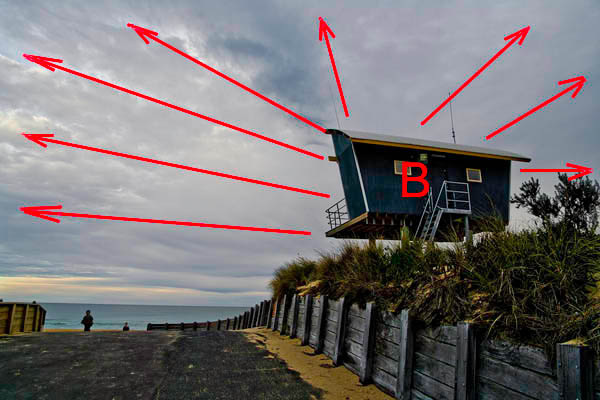

|
Centre of InterestVersion 1.0, © 2008 by Dale Cotton, all rights reserved Fig. 1. Surfside: © 2008 by Bob Munro, all rights reserved Bob Munro is a friend, photographer, and fellow Pentax K20D user who lives in south Australia. Bob is starting to toss off great shots like Surfside with depressing regularity. (It must be something about the Australian landscape ... perhaps if I move there when I retire... ;) One of the most difficult things about doing landscape is to add energy to the frame. If you shoot a mountain so that the entire mountain fills your frame, well that mountain is just sitting there – it isn't going anywhere. So your picture is going to have this tendency to say "here's this mountain sitting here on the ground", which is kind of boring and low energy. You can spice the shot up with Velvia saturation of gaudy sunrise/sunset colours and dramatic clouds, but the mountain is still not going anywhere. Surfside has no surfers or joggers or motor boats to provide a sense of motion/energy. We can't even determine if the two tiny figures are in motion or standing still. Yet somehow the pic seems to have all the energy of an express locomotive thundering down the track. Let's see if we can figure out how this is done. RadiationThe dark blue structure on the right is a life guard lookout station (apparently, swimming is a sacred activity in Australia and each beach requires its individual shrine). The lookout has intrinsically bold lines, but being seen from below and to the side suspends it in mid-air to loom over the rest of the scene. Its lines plus the horizon seem to establish a right-to-left thrust like so:
Fig. 2. Vector set A I've marked an A on the right edge of the frame as the point of origin of these lines, but actually they seem to originate from off-frame somewhere on the right. But when we study the Fig. 1 a bit more, we may begin to notice a second, perhaps more subtle, set of lines in the clouds radiating from the lookout:  Fig. 3. Vector set B ...And yet another set arising from the gravel road aiming at the smaller of the two children on the left:
Fig. 4. Vector set C Each of these sets of vectors originate from a different focal point; and each of these sets act independently of the other two. One's eye has a choice of paths to follow, but the only thing binding the three focal points together is that the A lines lead through both B and C. I experience this disjunct between the focal points as a certain visual tension, compounded by the fact that one of the focal points is not even in-frame. ConcentrationLost in a bewildering jungle of aesthetic choices, the male photographer desperately clings to whatever pillars of security he can find. One such pillar is the Sacred Rule of Thirds, another is that every composition must have a clear and prominent centre of interest. If you'll look back at Fig. 1, the guard lookout is so dark and prominent that it's pretty clearly the centre of interest of the pic ... or is it? The stout grey barricade running along the roadside is just as strong a visual element. And of course any people or animals in a pic are going to need attention. Our previous vector analysis points to the further child as being a focal point. Can a picture have more than one centre of interest ... or is that criminally against the rules? This picture does. This picture works. CoordinationSomething that women seem to understand instinctively but men rarely do, is what women call colour coordination. I call it colour rhyming. Either way, repeating colours – not to mention lines, shapes, and textures – help tie a picture together, and conversely one area of a unique colour with no echo elsewhere in the picture sticks out like the proverbial sore thumb. Notice how Surfside has ochre spread out in various places throughout the picture - both sand and wood and even in the sky. Also shades of grey and grey-blue. Also black. That's good. But colour has another use, that of establishing emotion. The heavy clouds are already freighted with an emotional charge that all humans seem to respond to. The use of dark hues and deep shadows enhances the mood. Confrontation and conclusionAn interesting little quirk of this image concerns the prominent lookout hut. Buried deep in the visual cortex is a network that parses all incoming visual data specifically to identify the face. Presumably, this goes back to animals on the lookout for predators lurking in the bush. Show a month-old infant a sheet of paper with a circle containing two dots above an upward arc, and the infant will smile in recognition of the implied face. The two rear windows on the lookout are its eyes; the railed landing of the stairwell forms a snout, and the two antennae are ears. The viewer may well not consciously recognize the face, but I strongly suspect it sends a strong subliminal message to any who do not. The combination of the implied dynamic motion, the fact that the focal point of some of that motion is off frame, and the looming drama of the sky tied to the coherent palette of colours – all this combines to create a picture that says something more than the "isn't this pretty?" of a typical photograph or painting. Instead, it reaches beneath the surface to stir some of the powerful archetypes that shape our souls. Please forgive an old man for pontificating, but this is not something one can plan for or set out to do. I'm sure Bob did not stop to analyze vectors and focal points or the felicitous congruence of somber hues. Quite the opposite: images like this happen when one surrenders oneself to the moment, when one lets greater forces than Cap'n Ego take the helm. Well seen, Bob. Nos morituri te salutamus. ;) Digging deeperMore pictures by Bob: A Bob Munro Sampler. Here's some background reading material:
|


{kind=link}